Room for more variety
48%
were only somewhat satisfied with existing flavor and product options.
31%
were dissatisfied with diet-specific choices, such as keto or gluten-free products.
This project expands NABORFOOD’s protein bar product line through customization, smart vending, and enhanced membership benefits. It extends the brand from a single food product into a more complete and connected protein bar experience.
Market
Consumers increasingly look to food for fitness, everyday energy and wellbeing. Protein bars sit at the intersection of this growing demand and the need for convenient nutrition.
Projected functional food market size by 2033.
Projected protein bar market size by 2033.
Expected annual growth of the protein bar market, 2024–2033.
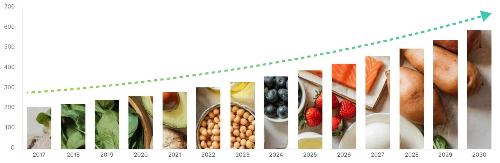
Sports nutrition and meal replacement are two major reasons people choose protein bars, bringing quick energy and nutritional support into everyday routines.
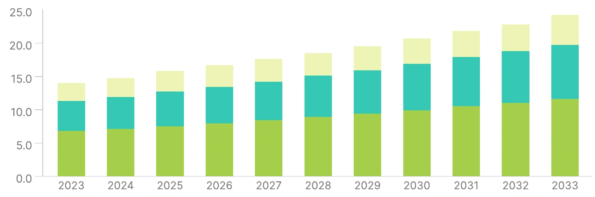
Convenience alone is not enough. Consumers also want flavors and dietary options that feel relevant to them.
were only somewhat satisfied with existing flavor and product options.
were dissatisfied with diet-specific choices, such as keto or gluten-free products.
eat meals or snacks on the go.
are interested in grab-and-go snacks such as protein bars.
Global personalized nutrition market size.
Key discoveries
These are the two main reasons why people consume protein bars.
Existing flavor variety could not fully satisfy consumers.
Users need more convenient access to nutrition products.
Research note: Figures and projections are taken from the original NABORFOOD Market research board and retain its forecast periods.
Our Brand
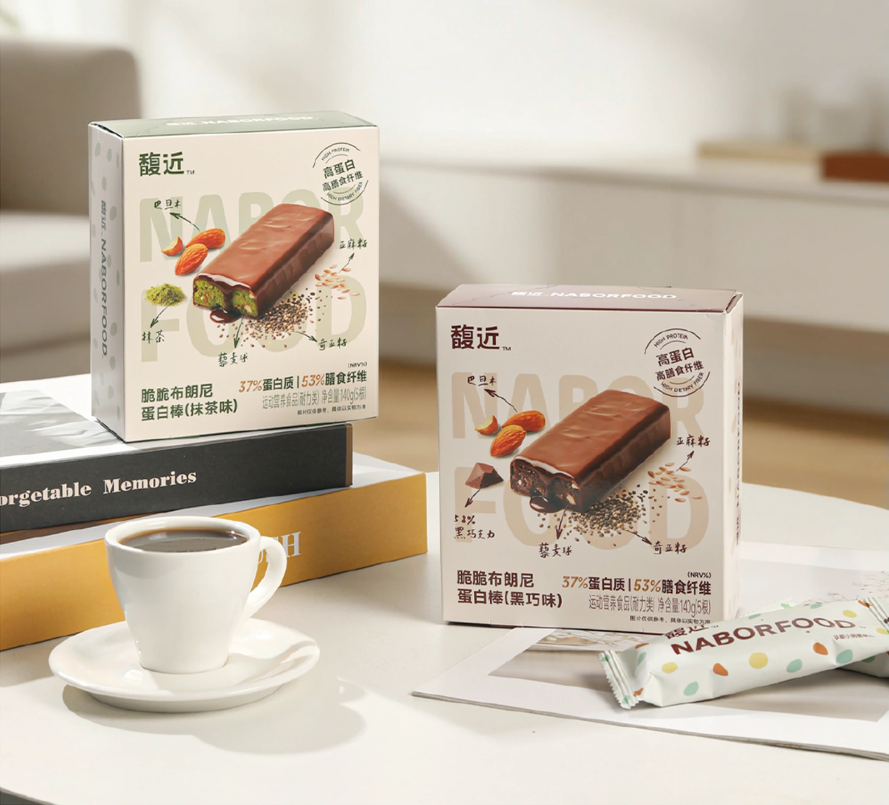
NABORFOOD is a start-up food brand focused on healthy lifestyle foods.
This project focuses on its protein bar product line.
Competitors
Looking across our competitor brands, they all focus on the same promise.
How to make NABORFOOD protein bars more distinctive?
Based on the background research and the problem found with our brand, I conducted a questionnaire to verify my discoveries, explore other needs, and decide which functions the new design should include.
In which situations do you usually need a quick meal?
| Response | Count | Share | |
|---|---|---|---|
| Before class | 42 | 60% | |
| When work is busy | 32 | 45.7% | |
| After a workout | 24 | 34.2% | |
| Before work | 20 | 28.6% | |
| During the commute | 14 | 20% | |
| While traveling | 10 | 14.3% | |
| Other | 0 | 0% | |
Our core user scenarios are before class, when work is busy, and after workouts.
If you could buy nutrition products that suit you immediately after exercise, how helpful do you think that would be?
| Response | Count | Share | |
|---|---|---|---|
| 5 (Very helpful) | 14 | 20% | |
| 4 | 30 | 42.9% | |
| 3 | 14 | 20% | |
| 2 | 8 | 11.4% | |
| 1 (Not helpful at all) | 4 | 5.7% | |
Over 60% of respondents think being able to buy nutrition products immediately after exercise would be helpful.
If there’s a system that can recommend nutrition products based on your fitness goals, how willing would you be to try it?
| Response | Count | Share | |
|---|---|---|---|
| 5 (Strongly agree) | 40 | 57.1% | |
| 4 | 18 | 25.7% | |
| 3 | 10 | 14.3% | |
| 2 | 2 | 2.9% | |
| 1 (Strongly disagree) | 0 | 0% | |
Respondents like the idea of a system that can recommend nutrition products based on their fitness goals.
What factors would you like the recommendation system to consider?
| Response | Count | Share | |
|---|---|---|---|
| Eating habits | 50 | 71.4% | |
| Fitness goals | 36 | 51.4% | |
| Exercise frequency | 36 | 51.4% | |
| Height and weight | 36 | 51.4% | |
| Calorie needs | 30 | 42.9% | |
| Taste preferences | 30 | 42.9% | |
Users want the recommendation system to consider personal lifestyle and body-related factors.
Questionnaire figures and findings are reproduced from the original project board.
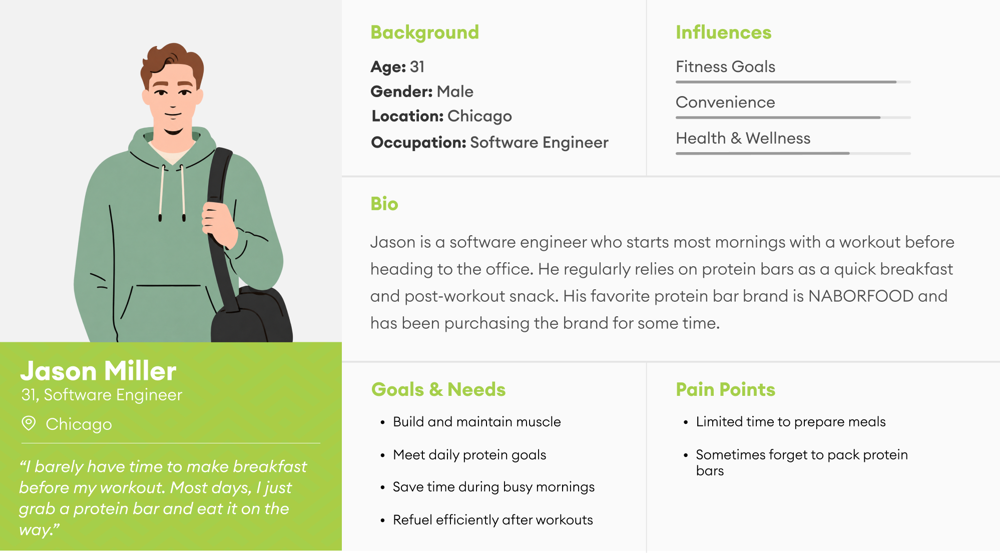
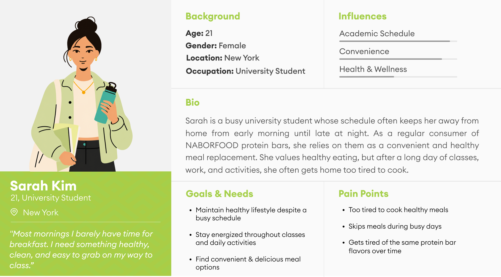
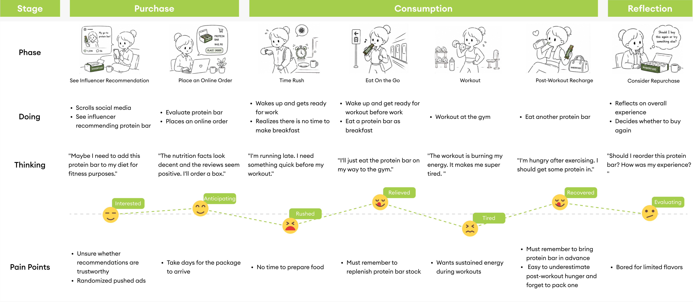
I brainstormed possible functions based on the previous findings, then evaluated them through a weighted scoring system.
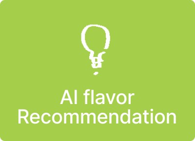
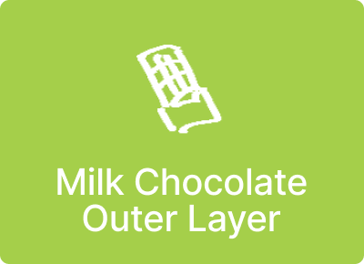
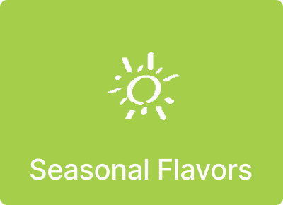
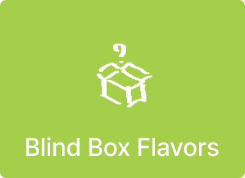
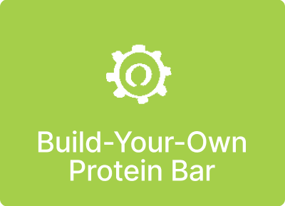
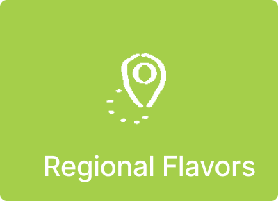
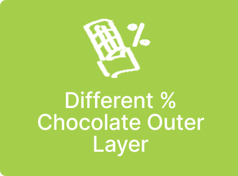
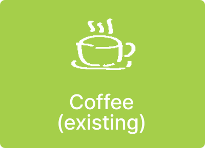
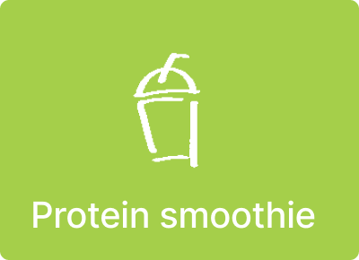
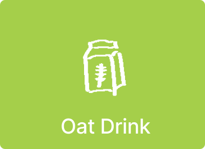
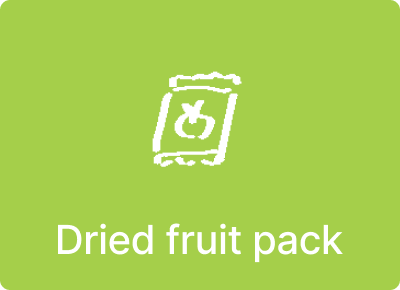
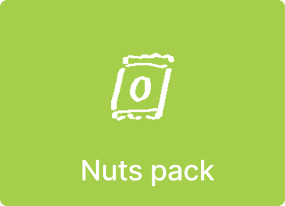
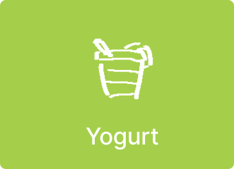
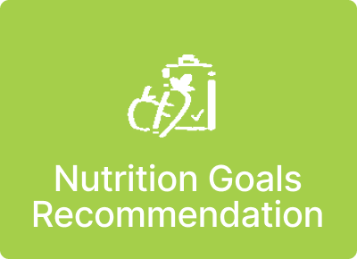
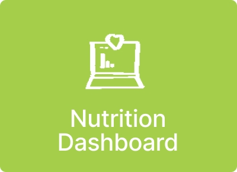
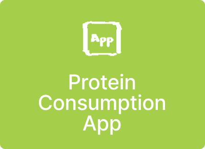
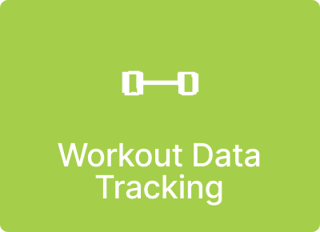
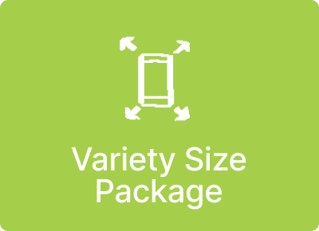
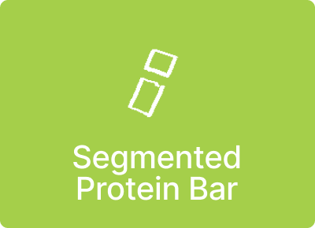
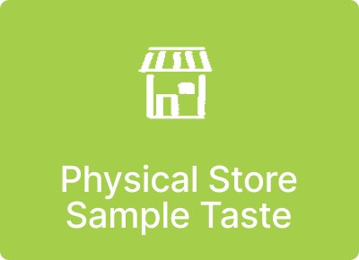
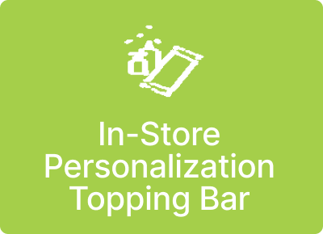
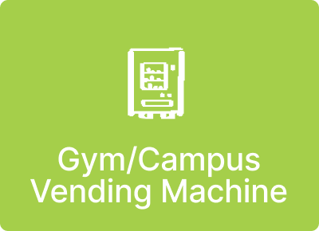
Each criterion was scored out of 5, with different weights for user need, innovation, repurchase potential, brand fit, and feasibility. The highest-scoring ideas were selected as the key functions for the final design.
| Function | 25%User Need | 25%Innovation | 20%Repurchase Potential | 20%Brand Fit | 10%Feasibility | Total Score |
|---|---|---|---|---|---|---|
| Gym/Campus Vending Machine | 5 | 5 | 5 | 5 | 4 | 4.90 |
| Build Your Own Protein Bar | 4 | 5 | 4 | 5 | 4 | 4.45 |
| AI Flavor Recommendation | 4 | 5 | 4 | 5 | 4 | 4.45 |
| Protein Consumption App | 3 | 3 | 4 | 5 | 5 | 3.90 |
| In-Store Personalization Bar | 3 | 5 | 2 | 5 | 5 | 3.80 |
| Nutrition Goals Recommendation | 5 | 2 | 3 | 5 | 3 | 3.65 |
| All Complementary Products | 4 | 1 | 4 | 4 | 5 | 3.35 |
| Subscription Membership | 4 | 1 | 5 | 2 | 5 | 3.15 |
| Workout Data Tracking | 3 | 1 | 4 | 3 | 5 | 2.90 |
Scroll to compare all criteria →
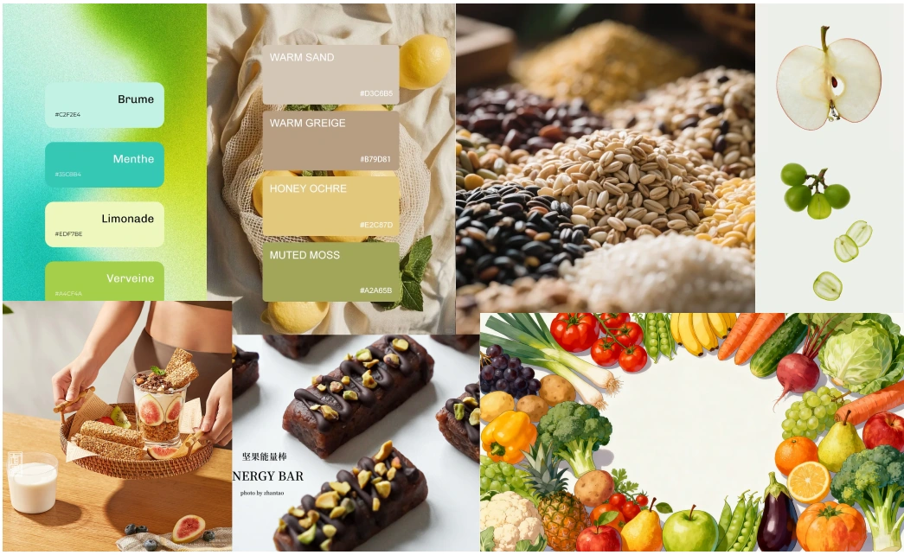
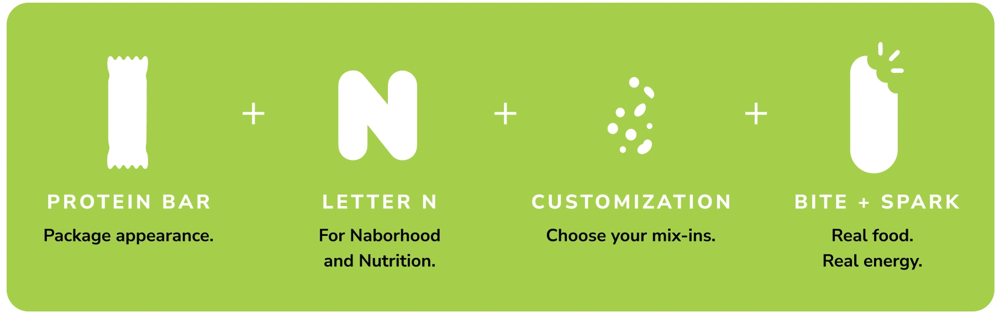
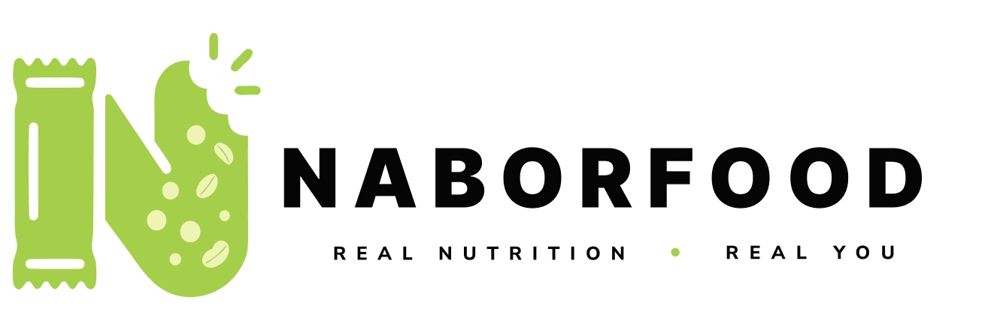
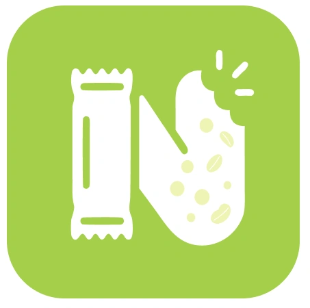
For this project, I designed a protein bar ecosystem with two main interactive bodies: the Smart Vending Machine and the Mobile App. The goal is to make NABORFOOD bars more accessible and personalized.
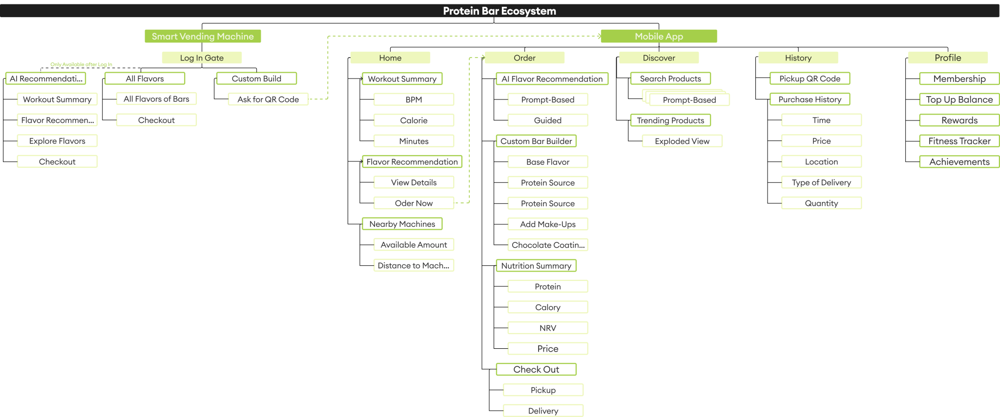
The vending machine makes the bars easier to get while also working as a visible brand touchpoint in different locations. The mobile app supports a deeper personalized experience, including workout-based suggestions, AI flavor recommendations, customized bar building, membership benefits, and more. Together, they make the bars easier to access and easier to personalize.
Before confirming the final wireframes, I conducted interviews with my younger sister and a friend.
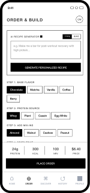
“I want a quick way to reorder a recipe I have purchased before.”
“The current customization feels a little boring. It could be more visual.”
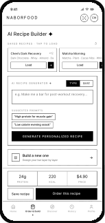
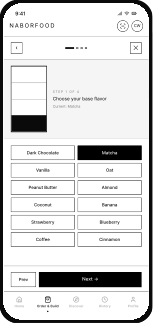
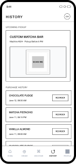
“The purchase history feels different from other shopping apps. There is not enough information shown outside.”
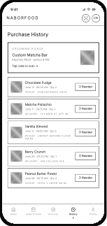
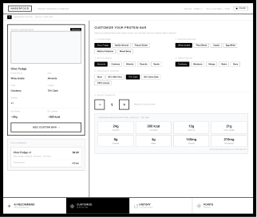
“The vending machine screen feels overloaded with content. It also looks exactly the same as the mobile app, which feels a little strange.”
I simplified the vending machine to focus on quick purchases and connect users to the app for more features.
Select a function to highlight its place on the screen.
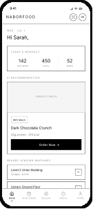
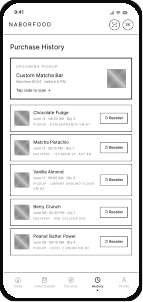
Users can first encounter NABORFOOD in two ways: through online promotion that leads them to the app, or through an offline encounter with a NABORFOOD vending machine. These two entry points connect and guide users into the broader NABORFOOD experience.
Consumers are increasingly looking for food products that support fitness, immunity, digestion, weight management, and everyday energy. This shift creates strong growth opportunities for functional foods and convenient nutrition products such as protein bars.
On the left side of the screen, I included a QR code to encourage users to download the app. This is important because our goal is to help the product become part of a long-term lifestyle purchase.
The machine uses the brand’s theme colors: white, green, and black.
At the top, the largest text highlights the NABORFOOD brand. The subtitle directly below clearly explains the machine’s purpose.
Below the screen, a variety of protein bars are displayed vertically. The colorful arrangement helps the machine stand out in its environment and reinforces that it is a protein bar vending machine.
Scroll to follow the journey from exploration to repurchase →
| Stage | Explore | Purchase | Consume | Repurchase | |||||||
|---|---|---|---|---|---|---|---|---|---|---|---|
| Consumer Goal | Discover a healthy and convenient snack option | Learn more about the product | Try the product | Purchase the product in a convenient way | Explore features of the product app | Create a product that fits personal taste and needs | Complete the order | Receive the product | Eat the product | Purchase products more conveniently with membership discounts | Make the product part of a daily routine |
| Consumer Actions | Consumers see NABORFOOD’s advertisement | Consumers visit NABORFOOD Physical Store | Consumers learn and sample taste NABORFOOD’s protein bars | Consumers see the Protein Station (Personalized Vending Machine) | Consumers open the app | Consumers customize a protein bar | Consumers purchase the protein bar | Consumers take the protein bar | Consumers eat the protein bar | Consumers subscribe to the membership | Consumers build a daily habit of buying NABORFOOD protein bars for workouts and other busy moments |
| Touchpoints | Social media ads, posters, influencer posts | Retail Experience Store | Sample Counter | Protein Station (Personalized Vending Machine) | NABORFOOD App | AI Protein Bar Flavor Generator | App Order Page | App QR Code & Protein Station | Protein Bar | App Profile Page | App notifications & nearby Protein Station machines |
| Front Stage Actions | Influencers post advertising blogs | Store displays introduce NABORFOOD brand, flavors, and product benefits | Staff offer sample tastes & introduce products | Staff instruct how to use the Protein Station | App shows workout summary and protein bar recommendation | AI Flavor Generator guides customization | App confirms order | App shows QR code | App shows membership benefits and plans | App sends notifications | |
| Back Stage Actions | Marketing team plans campaigns, contacts influencers, and prepares content | Retail team prepares store layout, product display, and brand introduction materials | Staff are trained, sample inventory is prepared, taste feedback is collected, customization recipe is designed | Operation team stocks the Protein Station | Backend tracks and stores user data | System matches preferences with flavor and nutrition data | System verifies payment and reserves product | Protein Station validates QR code and updates stock | Staff restock the Protein Station | Membership system activates benefits | App continues to collect purchase behavior, flavor preferences, and other data |
This is the NABORFOOD Experience Store. It is not only a place to purchase protein bars, but also a space where visitors can learn about the brand, taste different flavors of protein bars, create personalized protein bars, and explore the full product line. The five stages form one continuous journey.
NABORFOOD already has partnerships with a number of gyms. Building on these existing partnerships, we want to introduce our vending machines to more everyday locations. We could collaborate with schools, subway stations, offices, and other high-traffic spaces. This would make NABORFOOD products more accessible throughout users’ daily routines.
We could add a forum section to the app where users can share their customized recipes or post their thoughts on existing flavors. Users should also be able to like, save, rate, or comment. We hope this would encourage more interaction and help build a stronger NABORFOOD community.
NABORFOOD could introduce recyclable packaging and a packaging return program through its vending machines and stores. Users could earn membership points by returning used packages. This would encourage sustainable habits while helping the brand give back to society and take greater environmental responsibility.